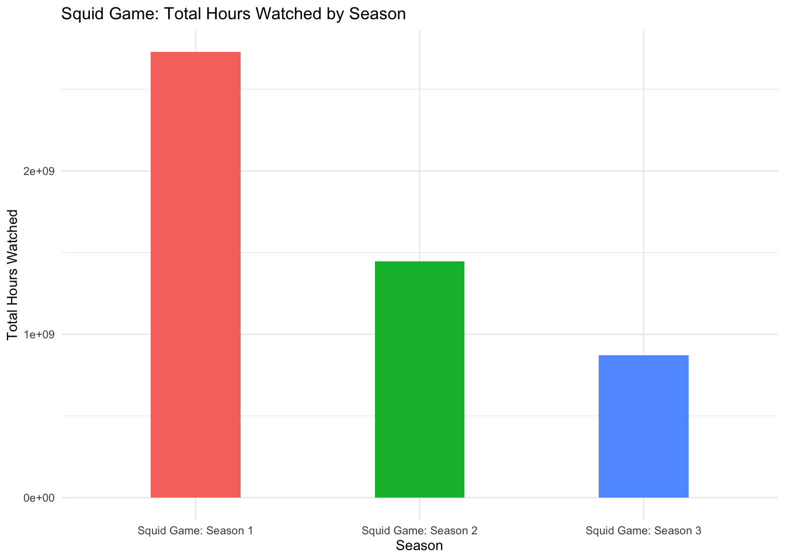

Mini-Project 01 involved assuming the role of a data analyst supporting the Public Relations team at Netflix by applying foundational data analysis tools and techniques. The primary objective was to extract and analyze public data from Netflix’s TuDum Top 10 list to identify key insights at both global and country-specific levels. These findings were then used to create three targeted press releases, highlighting regional and global content performance.
Key steps in the data analysis process included:
Data Acquisition: Global Top 10 and Country-wide Top 10 were two separate datasets from Netflix, both imported into R.
Data Cleaning: Datasets were cleaned to ensure proper formatting. This included converting placeholder strings, such as “N/A” into proper missing values “NA”, for accurate analysis.
Exploratory Data Analysis: Various analytical techniques were used to summarize key findings, identify trends, and evaluate content popularity in global and regional audiences.
This mini-project laid the foundation for effective data analysis by providing practical experience with real-world data. It introduced essential tools for cleaning, transforming, and interpreting data to make informed-strategic decisions for global promotion.
II. NETFLIX TOP 10: ANALYZING GLOBAL AND COUNTRY-SPECIFIC TRENDS
Q1. NETFLIX’S GLOBAL REACH
Netflix operates in 94 different countries. Below is a random selection of nations where Netflix streams its content. Its presence across six continents highlights its impressive global reach and influence.
Q2. LONGEST-CHARTING NON-ENGLISH FILM ON NETFLIX
The German anti-war film All Quiet on the Western Front was the highest non-English movie on Netflix, spending 276 weeks in the top 10. It was the third film adaptation, based on the 1929 novel by Erich Maria Remarque.
Q3. FILM WITH GREATEST RUNTIME ON NETFLIX’S GLOBAL TOP 10
Meanwhile, the longest film to appear on Netflix’s Global Top 10 is Pushpa 2: The Rule (Reloaded Version), with a runtime of 224 minutes. This extended version features almost 23 minutes of additional fight scenes and story elements that viewers can enjoy.
Q4. TOP PROGRAMS WITH THE HIGHEST GLOBAL VIEWERSHIP
KPop Demon Hunters, Society of the Snow, Stranger Things, Squid Game topped global viewership across all categories, with over 559,100,000, 235,900,000, 2,967,980,000, 5,048,300,000 total hours watched worldwide, respectively!
Q5. TV SHOW WITH LONGEST RUN IN A COUNTRY’S TOP 10
Money Heist was the longest-running TV show on Netflix’s Country Top 10 rankings. This popular Spanish crime series resonated strongly with audiences in Pakistan, remaining in the Top 10 for an impressive 127 weeks.
Q6. THE ONE COUNTRY WITH UNDER 200 WEEKS OF DATAY
Netflix provides over 200 weeks of service history for all. Russia was the one country where it ceased operations back on February 27, 2022, almost immediately following Russia’s full-scale invasion of Ukraine.
Q7. BREAKING DOWN THE TOTAL WATCH HOURS OF SQUID GAME
Squid Game has garnered over 5,048,300,000 hours of viewership worldwide across all three seasons. Even with eager anticipation for what happens next, Squid Games’s Season 1 still remains the most watched, outpacing its sequels by a significant margin.

Q8. ESTIMATED 2021 VIEWERSHIP FOR RED NOTICE
In 2021, Red Notice had 201,390,863 views globally. The success of this action/comedy movie, starring Dwayne Johnson, Gal Gadot, and Ryan Reynolds has led to a sequel that is currently in development, with a release date yet to be announced officially.
Q9. RISING TO THE TOP: FILM THAT MADE IT TO #1 AFTER A SLOW DEBUT
KPop Demon Hunters may not have debuted at #1 when it first released, but this animated musical film has captivated audiences of all ages. The success of this movie has kept it in the US Top 10 list for 13 weeks, having finally reached the #1 spot on September 14, 2025.
Q10. TV SHOW WITH WIDEST GLOBAL TOP 10 DEBUT
On December 26, 2021, audiences in 94 countries received a holiday gift when Emily in Paris: Season 2 finally premiered. Fans were eager to learn what would happen between Emily and Gabriel after the Season 1 cliffhanger ending!
III. PRESS RELEASES
Three Years Later…Stranger Things Returns to Finish the Story
Netflix is thrilled to announce the return of Stranger Things. Ahead of its highly anticipated series finale, we’re taking a moment to reflect on the show’s global success.
Stranger Things has captivated audiences around the world. It has charted in 93 countries, garnered an impressive 2,967,980,000 hours of viewing across its first four seasons, and spent 20 weeks in Netflix’s Global Top 10.
Its widespread appeal has made it one of Netflix’s streaming successes and it continues to surpass other platform favorites like Wednesday and Bridgerton with 2,842,150,000 and 2,279,710,000 of viewership hours, respectively.
The most recent season of Stranger Things brought in its largest viewership yet, drawing in 1,887,310,000 hours. If that momentum is any indication of what to expect, Season 5 will deliver even more mystery, drama, and unforgettable moments.
Stranger Things Season 5 is set to premiere on November 26, 2025.
Netflix’s Indian Matchmaking: Perfecting the Connection with 1.4 Billion Binge-Lovers
With over 1.4 billion people, India represents a major growth market for Netflix.
Hindi-language films and local content have proven highly successful, resonating strongly with Indian audiences through culturally relevant storytelling.
One standout success, Saiyaara, reached the top spot in India and garnered an impressive 21,200,000 total hours of viewership, outpacing the US top-charting Ice Road: Vengeance, which earned 14,400,000 total viewing hours.
India’s chart-topping titles may not have appeared in US rankings, but their outstanding viewership highlights the success of Netflix’s region-focused strategy and the power of culturally tailored programming to drive engagement.
As Hindi-language content consistently dominate India’s top rankings, the country shows strong long-term growth potential for Netflix.
Crash Landing into Global Charts: K-Dramas Conquering Audiences Beyond Borders
Since 2016, Netflix has invested $1 billion in Korean content, with an additional $2.5 billion committed through 2027. This significant investment is clearly paying off, as K-dramas have become a mainstream global phenomenon.
With 211 unique titles reaching the top spot in Korea’s weekly rankings, K-dramas continue to capture the hearts of its domestic audience. Yet, the love for Korean dramas knows no boundaries.
Korean shows have charted in the Top 10 in 94 different countries. The world went wild for Squid Games, which generated 5,048,300,000 hours of viewership and spent 42 weeks in the global top 10. Though widely considered the most iconic Korean drama to date, other beloved titles have also found major international success. Extraordinary Attorney Woo, for example, spent 21 weeks in the top 10 and earned 662,090,000 hours of global watch time.
The international success of Korean dramas is no accident. They have found a winning formula that resonates with audiences worldwide: diverse genres, relatable themes and characters, high production quality, and emotional authenticity. This combination proves that Korean content has gone beyond regional appeal. It is cementing its place in the global entertainment landscape.
Source Code
---title: MP01 - NETFLIX BY THE NUMBERSdate: "03 October 2025"format: html: code-fold: true code-tools: true toc: true toc-depth: 3execute: echo: false warning: false message: false---```{r,include=FALSE}if(!dir.exists(file.path("data", "mp01"))){dir.create(file.path("data", "mp01"), showWarnings=FALSE, recursive=TRUE)}GLOBAL_TOP_10_FILENAME <-file.path("data", "mp01", "global_top10_alltime.csv")if(!file.exists(GLOBAL_TOP_10_FILENAME)){download.file("https://www.netflix.com/tudum/top10/data/all-weeks-global.tsv", destfile=GLOBAL_TOP_10_FILENAME)}COUNTRY_TOP_10_FILENAME <-file.path("data", "mp01", "country_top10_alltime.csv")if(!file.exists(COUNTRY_TOP_10_FILENAME)){download.file("https://www.netflix.com/tudum/top10/data/all-weeks-countries.tsv", destfile=COUNTRY_TOP_10_FILENAME)}``````{r, include=FALSE}#Loading required packagesif(!require("tidyverse")) install.packages("tidyverse")library(readr)library(dplyr)library(ggplot2)library(lubridate)#Loading Global Top 10 datasetGLOBAL_TOP_10 <-read_tsv(GLOBAL_TOP_10_FILENAME)#Loading Country Top 10 dataset and changing "N/A" to NA on importCOUNTRY_TOP_10 <-read_tsv(COUNTRY_TOP_10_FILENAME, na ="N/A")#Verifying mutation was successfulglimpse(COUNTRY_TOP_10)``````{r, include=FALSE}#View data structurestr(GLOBAL_TOP_10)str(COUNTRY_TOP_10)``````{r, include=FALSE}#View overview of dataglimpse(GLOBAL_TOP_10)glimpse(COUNTRY_TOP_10)``````{r, include=FALSE}#Cleaning data to replace values with NAGLOBAL_TOP_10 <- GLOBAL_TOP_10 |>mutate(season_title =if_else(season_title =="N/A", NA, season_title))glimpse(GLOBAL_TOP_10)``````{r, include=FALSE}#Importing DT, library stringrlibrary(DT)library(stringr)#Reformatting columns and dropping season_title from tableformat_titles <-function(df){colnames(df) <-str_replace_all(colnames(df), "_", " ") |>str_to_title() df}#Reformatting column names, dropping season_title from table, converting runtime hours into minutesGLOBAL_TOP_10 |>mutate(`runtime_(minutes)`=round(60* runtime)) |>select(-season_title, -runtime) |>format_titles() |>head(n=20) |>datatable(options=list(searching=FALSE, info=FALSE)) |>formatRound(c('Weekly Hours Viewed', 'Weekly Views'))``````{r, echo=FALSE}#1. Number of different countries Netflix operates innum_countries <- COUNTRY_TOP_10 |>distinct(country_name)|>nrow()#num_countries```# I. EXECUTIVE SUMMARY # Mini-Project 01 involved assuming the role of a data analyst supporting the Public Relations team at Netflix by applying foundational data analysis tools and techniques. The primary objective was to extract and analyze public data from Netflix's TuDum Top 10 list to identify key insights at both global and country-specific levels. These findings were then used to create three targeted press releases, highlighting regional and global content performance.Key steps in the data analysis process included:1. Data Acquisition: *Global Top 10* and *Country-wide Top 10* were two separate datasets from Netflix, both imported into R.2. Data Cleaning: Datasets were cleaned to ensure proper formatting. This included converting placeholder strings, such as "N/A" into proper missing values "NA", for accurate analysis.3. Exploratory Data Analysis: Various analytical techniques were used to summarize key findings, identify trends, and evaluate content popularity in global and regional audiences.This mini-project laid the foundation for effective data analysis by providing practical experience with real-world data. It introduced essential tools for cleaning, transforming, and interpreting data to make informed-strategic decisions for global promotion.# II. NETFLIX TOP 10: ANALYZING GLOBAL AND COUNTRY-SPECIFIC TRENDS # #### **Q1. NETFLIX'S GLOBAL REACH** Netflix operates in `r num_countries` different countries. Below is a random selection of nations where Netflix streams its content. Its presence across six continents highlights its impressive global reach and influence.```{r, echo=FALSE}#Display a table with a random selection of 20 distinct countries that Netflix operates in, renaming columns for better aestheticCOUNTRY_TOP_10 |>distinct(country_name) |>rename(country = country_name) |>format_titles() |>slice_sample (n=20) |>datatable(options =list(searching =FALSE, info =FALSE),class ="compact stripe" )``````{r, echo=FALSE}#2. Non-English language film and total cumulative number of weeks spending in global top 10top_non_english_film <- GLOBAL_TOP_10 |>filter(category =="Films (Non-English)") |>group_by(show_title) |>summarize(total_number_weeks=sum(cumulative_weeks_in_top_10, na.rm=TRUE)) |>ungroup()|>arrange(desc(total_number_weeks)) |>slice_head(n=1)```#### **Q2. LONGEST-CHARTING NON-ENGLISH FILM ON NETFLIX**The German anti-war film *All Quiet on the Western Front* was the highest non-English movie on Netflix, spending `r top_non_english_film$total_number_weeks` weeks in the top 10. It was the third film adaptation, based on the 1929 novel by Erich Maria Remarque.```{r, echo=FALSE, results='show'}top_non_english_film_renamed <- top_non_english_film |>rename(`Show Title`= show_title,`Total Number of Weeks`= total_number_weeks )#Displaying results in a clean and compact table, renaming columns for better aestheticdatatable(top_non_english_film_renamed, options =list(dom ='t', paging =FALSE, columnDefs =list(list(className ='dt-center', targets ="_all") ) ),class ="compact stripe")``````{r, echo=FALSE}#3. Longest film (English on non-English) to have ever appeared in Netflix Global Top 10 + Length in minuteslongest_film <- GLOBAL_TOP_10 |>filter(str_detect(category, "Film")) |>drop_na(runtime) |>mutate(runtime_min=round(runtime *60)) |>arrange(desc(runtime_min)) |>slice_head(n=1)#print(longest_film)```#### **Q3. FILM WITH GREATEST RUNTIME ON NETFLIX'S GLOBAL TOP 10**Meanwhile, the longest film to appear on Netflix's Global Top 10 is *`r longest_film$show_title`*, with a runtime of `r longest_film$runtime_min` minutes. This extended version features almost 23 minutes of additional fight scenes and story elements that viewers can enjoy.```{r, echo=FALSE, results='show'}#Selecting specific columns for displaying in a clean table, renaming columns for better aestheticlongest_film_clean <- longest_film |>select(category, show_title, weekly_views, cumulative_weeks_in_top_10, runtime_min)|>mutate(weekly_views =format(weekly_views, big.mark =",", scientific=FALSE))|>rename(`Category`= category,`Show Title`= show_title,`Weekly Views`= weekly_views,`Cumulative Weeks in Top 10`= cumulative_weeks_in_top_10,`Runtime in Minutes`= runtime_min )#Displaying results a clean and compact tabledatatable(longest_film_clean, options =list(dom ='t', paging =FALSE, columnDefs =list(list(className ='dt-center', targets ="_all") ) ),class ="compact stripe")``````{r, echo=FALSE}#4. Most total hours of global viewership - for each of the 4 categoriesmost_viewed_by_category <- GLOBAL_TOP_10 |>group_by(category, show_title) |>summarize(total_hours =sum(weekly_hours_viewed, na.rm=TRUE), .groups ="drop") |>arrange(category, desc(total_hours)) |>group_by(category)|>slice_head(n=1)#print(most_viewed_by_category)```#### **Q4. TOP PROGRAMS WITH THE HIGHEST GLOBAL VIEWERSHIP** *`r most_viewed_by_category$show_title`* topped global viewership across all categories, with over `r scales::comma(most_viewed_by_category$total_hours)` total hours watched worldwide, respectively!```{r, echo=FALSE}#Displaying results in a clean and compact table, renaming columns for better aestheticdatatable( most_viewed_by_category |>mutate(total_hours =format(total_hours, big.mark =",", scientific=FALSE))|>rename(`Category`= category,`Show Title`= show_title,`Total Hours Viewed`= total_hours ),options =list(dom ='t', paging =FALSE, columnDefs =list(list(className ='dt-center', targets ="_all") ) ),class ="compact stripe")``````{r, echo=FALSE}#5. TV show with longest run in country's top 10; length of the run and the countrylongest_tv_run <- COUNTRY_TOP_10 |>filter(str_detect(category, "TV"))|>group_by(show_title, country_name)|>summarize(total_weeks=max(cumulative_weeks_in_top_10, na.rm =TRUE), .groups ="drop")|>arrange(desc(total_weeks))|>slice_head(n=1)#print(longest_tv_run)```#### **Q5. TV SHOW WITH LONGEST RUN IN A COUNTRY'S TOP 10***`r longest_tv_run$show_title`* was the longest-running TV show on Netflix's Country Top 10 rankings. This popular Spanish crime series resonated strongly with audiences in `r longest_tv_run$country_name`, remaining in the Top 10 for an impressive `r longest_tv_run$total_weeks` weeks.```{r, echo=FALSE}#Displaying results in a clean and compact table, renaming columns for better aestheticdatatable( longest_tv_run |>rename(`Country Name`= country_name,`Show Title`= show_title,`Total Weeks`= total_weeks ),options =list(dom ='t', paging =FALSE, columnDefs =list(list(className ='dt-center', targets ="_all") ) ),class ="compact stripe")``````{r, echo=FALSE}#6. Country with no service history and date Netflix ceased its operations there#Identify one country with less than 200 weeks of data. Using slice_head to verify resultscountry_weeks <- COUNTRY_TOP_10 |>group_by(country_name)|>summarize(weeks_recorded=n_distinct(week))|>ungroup()|>arrange(weeks_recorded)|>slice_head(n=1)#print(country_no_ops)#Sole country with less than 200 weeksfewest_weeks_country <- country_weeks$country_name[1]#Last week Netflix operated in the countrylast_week <- COUNTRY_TOP_10 |>filter(country_name == fewest_weeks_country)|>summarize(last_week =max(week, na.rm=TRUE))#print(last_week)#Extract the date valuelast_week_date <- last_week$last_week[1]#Adding date as a new column by using mutatecountry_weeks <- country_weeks |>mutate(last_week = last_week_date)```#### **Q6. THE ONE COUNTRY WITH UNDER 200 WEEKS OF DATAY**Netflix provides over 200 weeks of service history for all. `r fewest_weeks_country` was the one country where it ceased operations back on `r format(last_week_date, "%B %d, %Y")`, almost immediately following `r fewest_weeks_country`'s full-scale invasion of Ukraine.```{r, echo=FALSE}# Must join data to create my tablecountry_weeks_no_ops <- country_weeks |>mutate(last_week)#Displaying results in a clean and compact table, renaming and aligning columns for better aestheticdatatable( country_weeks_no_ops |>mutate(last_week=format(last_week, "%B %d, %Y"))|>rename(`Country Name`= country_name,`Weeks Recorded`= weeks_recorded,`Date of Last Operation`= last_week ),options =list(dom ='t', paging =FALSE, columnDefs =list(list(className ='dt-center', targets ="_all")) ),class ="compact stripe")``````{r, echo=FALSE}#7. Total viewership of Squid Game across all seasons, excluding the Squid Game reality show and focus on the drama specifically. Grouping by season_title to create a bar chart for visualizationtotal_squidgame_hours <- GLOBAL_TOP_10 |>filter(str_detect(show_title, "Squid Game"), season_title !="Squid Game: The Challenge: Season 1")|>group_by(season_title) |>summarize(total_hours_watched=sum(weekly_hours_viewed, na.rm =TRUE))#print(total_squidgame_hours)```#### **Q7. BREAKING DOWN THE TOTAL WATCH HOURS OF *SQUID GAME* ***Squid Game* has garnered over `r scales::comma(sum(total_squidgame_hours$total_hours_watched))` hours of viewership worldwide across all three seasons. Even with eager anticipation for what happens next, *Squid Games's* Season 1 still remains the most watched, outpacing its sequels by a significant margin.```{r, echo=FALSE}#Displaying results in a clean bar chart to show viewership by season for comparisonggplot(total_squidgame_hours, aes(x = season_title, y = total_hours_watched, fill = season_title)) +geom_col (width =0.4) +labs (title="Squid Game: Total Hours Watched by Season",x="Season",y="Total Hours Watched")+theme_minimal(base_size =9 )+theme(legend.position ="none")``````{r, echo=FALSE}#8. Determine how many view Red Notice received in 2021.#Red Notice has a runtime of 1h58min. Convert this into hoursruntime_hours <-round(1+(58/60),2) rednotice_views_2021 <- GLOBAL_TOP_10 |>filter(show_title =="Red Notice", year(week) ==2021) |>mutate(estimated_views = weekly_hours_viewed/runtime_hours) |>summarise(total_estimated_views_2021 =round(sum(estimated_views, na.rm =TRUE),0))|>mutate(total_estimated_views_2021 = scales::comma(total_estimated_views_2021))#print(rednotice_views_2021)```#### **Q8. ESTIMATED 2021 VIEWERSHIP FOR *RED NOTICE* **In 2021, *Red Notice* had `r rednotice_views_2021` views globally. The success of this action/comedy movie, starring Dwayne Johnson, Gal Gadot, and Ryan Reynolds has led to a sequel that is currently in development, with a release date yet to be announced officially.```{r, echo=FALSE}#Displaying results in a clean and compact table, renaming and aligning columns for better aestheticdatatable( rednotice_views_2021 |>rename( `Total Estimated Views`= total_estimated_views_2021), options =list(dom ='t', paging =FALSE, columnDefs =list(list(className ='dt-center', targets ="_all")) ),class ="compact stripe")``````{r, echo=FALSE}#9.How many Films reached Number 1 in the US but did not originally debut there? That is, find films that first appeared on the Top 10 chart at, e.g., Number 4 but then became more popular and eventually hit Number 1? What is the most recent film to pull this off? #Filtering data for US films onlyus_films <- COUNTRY_TOP_10 |>filter(country_name =="United States", category =="Films")#Create new variable for each film to determine if it ever topped number 1us_films_number1 <- us_films |>group_by(show_title) |>mutate(ever_topped_1=any(weekly_rank ==1))|>ungroup()#Determine each film's debut rank in its first weekdebut_ranks <- us_films_number1 |>group_by(show_title)|>summarise(debut_week =min(week),debut_rank = weekly_rank[week ==min(week)][1],ever_topped_1 =first(ever_topped_1))|>ungroup()#Determine the films that make it to number 1 (without debuting at 1)films_reaching_to_1 <- debut_ranks |>filter(debut_rank !=1, ever_topped_1 ==TRUE)#Determine film to most recently climb to number 1most_recent_topper <- us_films_number1 |>filter(weekly_rank ==1, show_title %in% films_reaching_to_1$show_title) |>arrange(desc(week)) |>slice(1)season_title<- most_recent_topper$show_title[1]cumulative_weeks <-most_recent_topper$cumulative_weeks_in_top_10[1]week_toped_at_1 <- most_recent_topper$week```#### **Q9. RISING TO THE TOP: FILM THAT MADE IT TO #1 AFTER A SLOW DEBUT***`r season_title`* may not have debuted at #1 when it first released, but this animated musical film has captivated audiences of all ages. The success of this movie has kept it in the US Top 10 list for `r cumulative_weeks` weeks, having finally reached the #1 spot on `r format(week_toped_at_1, "%B %d, %Y")`.```{r, echo=FALSE}#Displaying results in a clean and compact table, renaming and aligning columns for better aestheticmost_recent_topper_clean <- most_recent_topper |>select(show_title, cumulative_weeks_in_top_10, week)|>mutate(week=format(week, "%B %d, %Y"))datatable(most_recent_topper_clean|>rename( `Show Title`= show_title,`Cumulative Weeks`= cumulative_weeks_in_top_10,`Week Topped at #1`= week), options=list (dom='t',paging =FALSE,columnDefs =list(list(className ='dt-center', targets ="_all")) ),class ="compact stripe")``````{r, echo=FALSE}#10.TV show/season that hit the top 10 in the most countries in its debut week. Number of countries where it charted in top 10. #Determine the debut week for each show and seasondebut_weeks <- COUNTRY_TOP_10 |>filter(!is.na(season_title)) |>group_by(show_title, season_title, country_name) |>summarise(debut_week =min(week), .groups ="drop")#print(debut_weeks)#Determine how many countries a particular show appeared during its week first on Top 10 list. Using .groups ='drop' so the comments do not render on my pagecountry_counts <- debut_weeks |>group_by(show_title, season_title, debut_week) |>summarise(num_countries=n(), .groups ="drop")#print(country_counts)#Determine the show/season that charted in most countries during its debut weektop_show <- country_counts |>filter(num_countries ==max(num_countries))#print(top_show)debut_week <- top_show$debut_week[1]show_name <- top_show$show_title[1]num_countries <- top_show$num_countries[1]season_title <- top_show$season_title[1]```#### **Q10. TV SHOW WITH WIDEST GLOBAL TOP 10 DEBUT**On `r format(debut_week, "%B %d, %Y")`, audiences in `r num_countries` countries received a holiday gift when *`r season_title`* finally premiered. Fans were eager to learn what would happen between Emily and Gabriel after the Season 1 cliffhanger ending!```{r, echo=FALSE}#Displaying results in a clean and compact table, renaming and aligning columns for better aestheticdatatable( top_show |>mutate(debut_week=format(debut_week, "%B %d, %Y"))|>rename( `Show Title`= show_title,`Season Title`= season_title,`Debut Week`= debut_week,`Number of Countries`= num_countries, ), options =list(dom ='t', paging =FALSE, columnDefs =list(list(className ='dt-center', targets ="_all")) ),class ="compact stripe")```# III. PRESS RELEASES # ``` {r,echo=FALSE, results='hide'}#Filter data of Stranger Things in Global Top 10 and Country Top 10 datasetsstranger_things_global <- GLOBAL_TOP_10 |>filter(str_detect(show_title, "Stranger Things"))stranger_things_country <- COUNTRY_TOP_10 |>filter(str_detect(show_title, "Stranger Things"))#Determine total hours of global viewership of Stranger Thingstotal_hours_viewed <- stranger_things_global |>summarize(total_hours =sum(weekly_hours_viewed, na.rm =TRUE))#print(total_hours_viewed)#Determine total hours of global viewership of Stranger Things by season, assuming NA values are "Season 1"stranger_things_by_season <- stranger_things_global|>mutate(season_title=if_else(is.na(season_title), "Season 1", season_title))|>group_by(season_title)|>summarise(total_hours_watched =sum(weekly_hours_viewed, na.rm =TRUE), .groups ="drop")|>arrange(desc(total_hours_watched))#print(stranger_things_by_season)#Determine number of weeks Stranger Things was in Top 10total_weeks_top10 <- stranger_things_global |>distinct(week) |>summarise(weeks_in_top10 =n())#print(total_weeks_top10)#Determine number of countries Stranger Things appeared in Top 10number_countries_top10 <- stranger_things_country|>distinct(country_name) |>summarise (countries=n())#print(number_countries_top10)#Determine only top 10 show titles in English for comparison purposesGLOBAL_TOP_10 |>filter(category =="TV (English)")|>group_by(show_title) |>summarise(total_hours =sum(weekly_hours_viewed, na.rm =TRUE))|>arrange(desc(total_hours))|>slice_head(n=10)#Conduct comparison of Stranger Things to other popular English-language TV shows selected from GLOBAL_TOP_10top_shows <-c("Wednesday", "Bridgerton", "You","Manifest", "The Night Agent")comparison <- GLOBAL_TOP_10 |>filter(show_title %in% top_shows)|>group_by(show_title) |>summarise(total_hours =sum(weekly_hours_viewed, na.rm =TRUE),weeks_in_top_10 =n_distinct(week),.groups ="drop")#print(comparison)```## Three Years Later...*Stranger Things* Returns to Finish the Story- Netflix is thrilled to announce the return of *Stranger Things*. Ahead of its highly anticipated series finale, we're taking a moment to reflect on the show's global success.- *Stranger Things* has captivated audiences around the world. It has charted in `r number_countries_top10$countries` countries, garnered an impressive `r scales::comma(total_hours_viewed$total_hours)` hours of viewing across its first four seasons, and spent `r scales::comma(total_weeks_top10$weeks_in_top10)` weeks in Netflix's Global Top 10.- Its widespread appeal has made it one of Netflix's streaming successes and it continues to surpass other platform favorites like *Wednesday* and *Bridgerton* with `r scales::comma(comparison$total_hours[comparison$show_title == "Wednesday"])` and `r scales::comma(comparison$total_hours[comparison$show_title == "Bridgerton"])` of viewership hours, respectively.- The most recent season of *Stranger Things* brought in its largest viewership yet, drawing in `r scales::comma(stranger_things_by_season$total_hours_watched[1])` hours. If that momentum is any indication of what to expect, Season 5 will deliver even more mystery, drama, and unforgettable moments.- *Stranger Things* Season 5 is set to premiere on November 26, 2025.``` {r, echo = FALSE}#Determine top show titles in India to rank #1india_top10 <- COUNTRY_TOP_10|>filter(country_name =="India", weekly_rank==1)|>distinct(show_title)#india_top10#Determine all show titles that charted in the USus_top10 <- COUNTRY_TOP_10|>filter(country_name =="United States", weekly_rank==1)|>distinct(show_title)#Determine show titles that hit #1 in India but did not chart in the USindia_top1_nochart_usa <- india_top10 |>filter(!show_title %in% us_top10$show_title)#Select 2 top shows to chart at #1 in Indiatop_shows_india <-c("Saiyaara", "Inspector Zende")#Determine total viewership hours and weeks in top 10 of these 2 tops shows (Saiyaara, Inspector Zende)comparison_india <- GLOBAL_TOP_10 |>filter(show_title %in% top_shows_india)|>group_by(show_title) |>summarise(total_hours =sum(weekly_hours_viewed, na.rm =TRUE),weeks_in_top_10 =n_distinct(week),.groups ="drop")#Select 2 top shows to chart at #1 in UStop_shows_us <-c("Ice Road: Vengeance", "KPop Demon Hunters")#Determine total viewership hours and weeks in top 10 of these 2 tops shows (Saiyaara, Inspector Zende)comparison_usa <- GLOBAL_TOP_10 |>filter(show_title %in% top_shows_us)|>group_by(show_title) |>summarise(total_hours =sum(weekly_hours_viewed, na.rm =TRUE),weeks_in_top_10 =n_distinct(week),.groups ="drop") ```## Netflix's Indian Matchmaking: Perfecting the Connection with 1.4 Billion Binge-Lovers- With over 1.4 billion people, India represents a major growth market for Netflix. - Hindi-language films and local content have proven highly successful, resonating strongly with Indian audiences through culturally relevant storytelling.- One standout success, *Saiyaara*, reached the top spot in India and garnered an impressive `r scales::comma(comparison_india$total_hours[comparison_india$show_title == "Saiyaara"])` total hours of viewership, outpacing the US top-charting *Ice Road: Vengeance*, which earned `r scales::comma(comparison_usa$total_hours[comparison_usa$show_title == "Ice Road: Vengeance"])` total viewing hours.- India's chart-topping titles may not have appeared in US rankings, but their outstanding viewership highlights the success of Netflix's region-focused strategy and the power of culturally tailored programming to drive engagement.- As Hindi-language content consistently dominate India's top rankings, the country shows strong long-term growth potential for Netflix.``` {r, echo = FALSE}# Determine list af Korean shows that ranked #1. I do not have a specific language column to filter, so we assume that these are all filtering Korean shows.korean_shows_country <- COUNTRY_TOP_10 |>filter(country_name =="South Korea", weekly_rank ==1) |>distinct(show_title)|>pull(show_title)#Determine the count of distinct Korean shows (for inline coding)num_korean_shows_country <-length(unique(korean_shows_country))#Determine what countries these shows ranked #1 outside of Korea, assuming "korean_shows_country" filtered Korean shows only.korean_shows_rank1_outside_korea <- COUNTRY_TOP_10|>filter(show_title %in% korean_shows_country, country_name !="South Korea", weekly_rank ==1)|>distinct(show_title, country_name)#Determine whether Korean #1 shows appear in the Global Top 10 rankings (any rank)korean_shows_global <- GLOBAL_TOP_10|>filter(show_title %in% korean_shows_country)#Determine the global performance of these shows, limiting to top 10 weekly rankskorean_shows_global <- korean_shows_global|>filter(weekly_rank <=10)#Summarizing Korean global performance by hours viewed and total weeks in top 10korean_success <- korean_shows_global|>group_by(show_title)|>summarise(total_hours_viewed =sum(weekly_hours_viewed, na.rm=TRUE),total_weeks_top10 =n_distinct(week), .groups="drop")|>arrange(desc(total_hours_viewed))#Extract total hours viewed of top 5 titles (for inline coding stats)selected_shows <-c("Squid Game", "Extraordinary Attorney Woo","All of Us Are Dead", "Queen of Tears", " The Glory")#Pull total hours viewed for those 5 titlesselected_hours <- korean_success |>filter(show_title %in% selected_shows)|>select(show_title, total_hours_viewed)#Pull total hours viewed as simple number for inline codingsquid_game_hours <- selected_hours$total_hours_viewed[selected_hours$show_title =="Squid Game"]woo_hours <- selected_hours$total_hours_viewed[selected_hours$show_title =="Extraordinary Attorney Woo"]all_dead_hours <- selected_hours$total_hours_viewed[selected_hours$show_title =="All of Us Are Dead"]queen_tears_hours <- selected_hours$total_hours_viewed[selected_hours$show_title =="Queen of Tears"]glory_hours <- selected_hours$total_hours_viewed[selected_hours$show_title =="The Glory"]#Pull total weeks in top 10 for those 5 titlesselected_weeks <- korean_success |>filter(show_title %in% selected_shows)|>select(show_title, total_weeks_top10)#Pull total weeks in top 10 as simple number for inline codingsquid_game_weeks <- selected_weeks$total_weeks_top10[selected_weeks$show_title =="Squid Game"]woo_weeks <- selected_weeks$total_weeks_top10[selected_weeks$show_title =="Extraordinary Attorney Woo"]all_dead_weeks <- selected_weeks$total_weeks_top10[selected_weeks$show_title =="All of Us Are Dead"]queen_tears_weeks <- selected_weeks$total_weeks_top10[selected_weeks$show_title =="Queen of Tears"]glory_weeks <- selected_weeks$total_weeks_top10[selected_weeks$show_title =="The Glory"]#Determine the number of different countries these Korean shows shows chartedcountries_where_Kshows_charted <- COUNTRY_TOP_10|>filter(show_title %in% korean_shows_country)|>distinct (country_name)|>count()##Determine the count of distinct countries K-dramas charted (for inline coding)num_countries_where_Kshows_charted <- countries_where_Kshows_charted$n```## Crash Landing into Global Charts: K-Dramas Conquering Audiences Beyond Borders- Since 2016, Netflix has invested \$1 billion in Korean content, with an additional \$2.5 billion committed through 2027. This significant investment is clearly paying off, as K-dramas have become a mainstream global phenomenon. - With `r num_korean_shows_country` unique titles reaching the top spot in Korea's weekly rankings, K-dramas continue to capture the hearts of its domestic audience. Yet, the love for Korean dramas knows no boundaries. - Korean shows have charted in the Top 10 in `r num_countries_where_Kshows_charted ` different countries. The world went wild for *Squid Games*, which generated `r scales::comma(squid_game_hours)` hours of viewership and spent `r squid_game_weeks` weeks in the global top 10. Though widely considered the most iconic Korean drama to date, other beloved titles have also found major international success. *Extraordinary Attorney Woo*, for example, spent `r woo_weeks` weeks in the top 10 and earned `r scales::comma(woo_hours)` hours of global watch time.- The international success of Korean dramas is no accident. They have found a winning formula that resonates with audiences worldwide: diverse genres, relatable themes and characters, high production quality, and emotional authenticity. This combination proves that Korean content has gone beyond regional appeal. It is cementing its place in the global entertainment landscape.